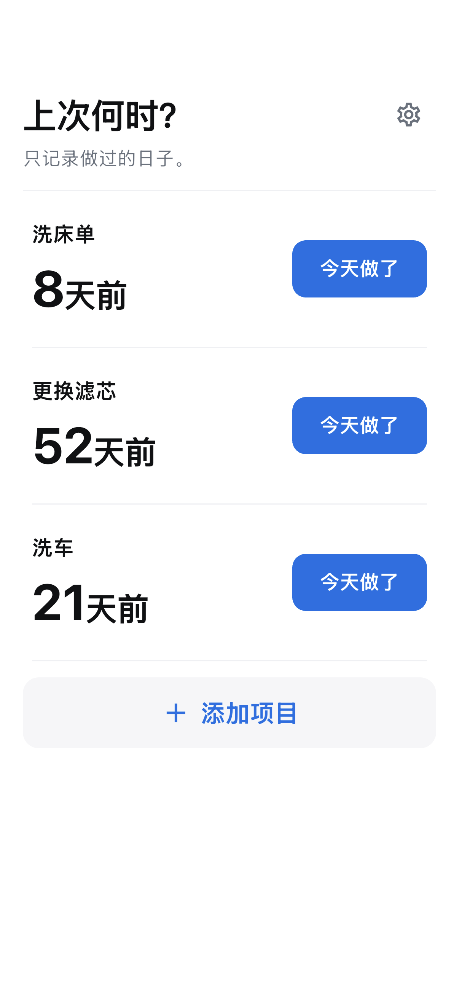

上次何时？ · iOS / Android
记录清洁、更换和保养日期，查看距离上次过了多久。
准备发布中

使用方法
只需名称即可添加想记住的清洁、更换或保养。
点击今天做了立即保存，点错了可撤销。
在主页查看经过天数，点击项目查看历史与平均间隔。
只保留必要功能
不提供提醒或建议周期。平均值仅根据您自己的记录计算。
项目与历史保存在本机，离线也能记录。广告使用互联网。
OS备份可能包含数据，但不保证恢复。